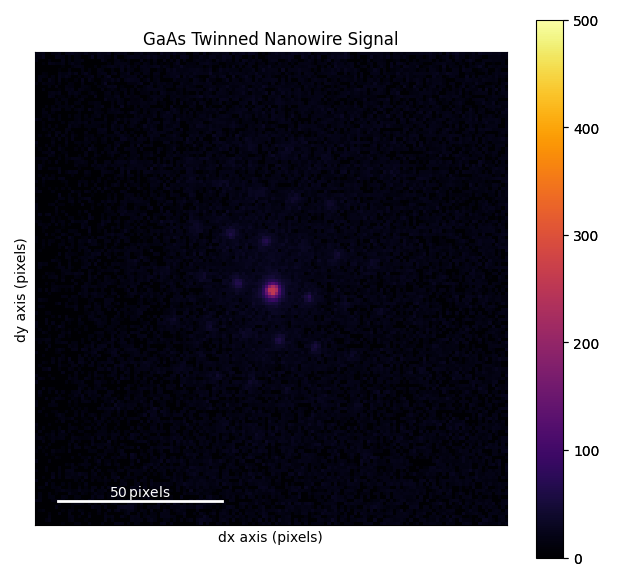
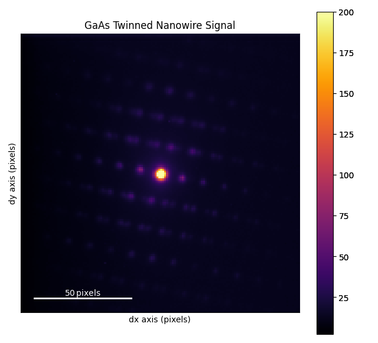
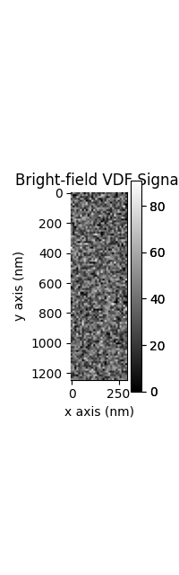
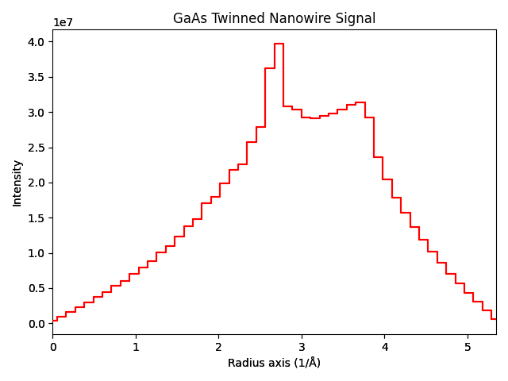
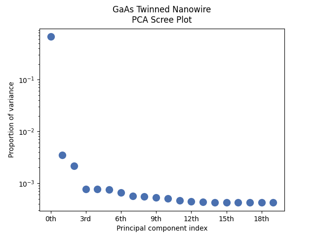
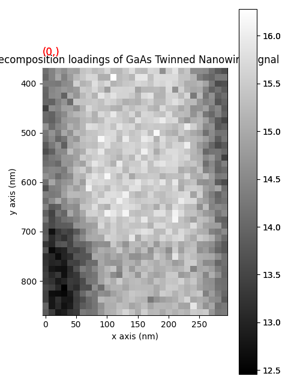
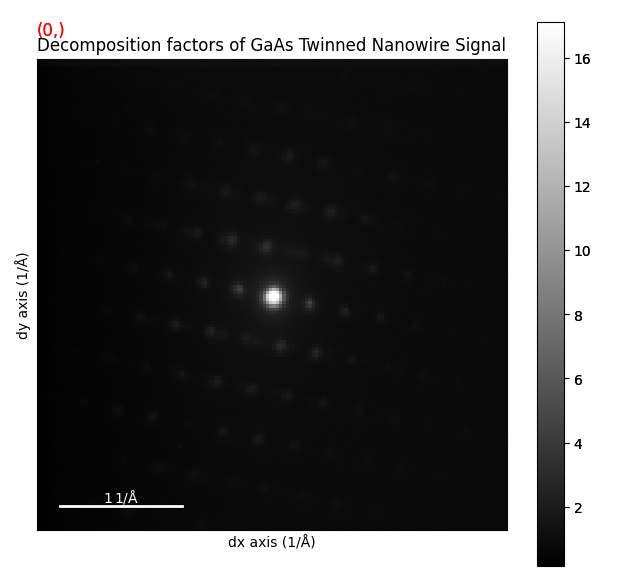
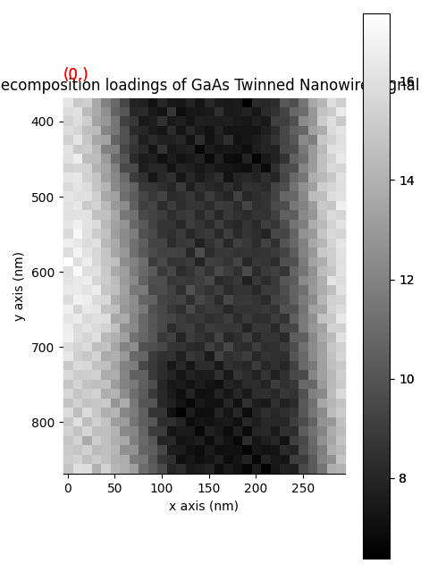
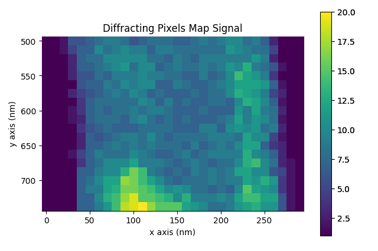

Note
Go to the end to download the full example code.
4D-STEM Data Inspection and Preprocessing#
This tutorial walks through a complete 4D-STEM data inspection and preprocessing workflow using a real GaAs twinned nanowire dataset. It covers:
Loading and inspecting a 4D-STEM dataset
Calibrating the diffraction space
Virtual dark-field (VDF) imaging from regions of interest
Decomposition using SVD and NMF to identify structural phases
Diffraction vector extraction and peak finding
The dataset is a GaAs nanowire that contains both the zinc-blende (cubic) and wurtzite (hexagonal) crystal phases, separated by twin boundaries. This makes it an ideal dataset for learning multi-phase 4D-STEM analysis.
The data can be accessed from https://zenodo.org/records/15490547
import numpy as np
import matplotlib.pyplot as plt
import hyperspy.api as hs
import pyxem as pxm
Loading the Data#
The twinned nanowire dataset is a 4D-STEM scan of a GaAs nanowire with twin boundaries. We load it lazily to avoid reading the full array into memory.
s = pxm.data.twinned_nanowire(allow_download=True, lazy=True)
print(s)
0%| | 0.00/34.5M [00:00<?, ?B/s]
0%| | 90.1k/34.5M [00:00<00:52, 650kB/s]
1%|▏ | 188k/34.5M [00:00<01:01, 557kB/s]
1%|▍ | 401k/34.5M [00:00<00:41, 820kB/s]
2%|▋ | 647k/34.5M [00:00<00:26, 1.25MB/s]
2%|▉ | 795k/34.5M [00:00<00:32, 1.04MB/s]
3%|█ | 918k/34.5M [00:00<00:30, 1.08MB/s]
3%|█▏ | 1.11M/34.5M [00:01<00:32, 1.04MB/s]
4%|█▍ | 1.29M/34.5M [00:01<00:33, 999kB/s]
4%|█▌ | 1.46M/34.5M [00:01<00:34, 967kB/s]
5%|█▊ | 1.66M/34.5M [00:01<00:28, 1.17MB/s]
5%|█▉ | 1.82M/34.5M [00:01<00:31, 1.05MB/s]
6%|██▏ | 2.05M/34.5M [00:01<00:29, 1.09MB/s]
6%|██▍ | 2.23M/34.5M [00:02<00:31, 1.04MB/s]
7%|██▋ | 2.46M/34.5M [00:02<00:25, 1.28MB/s]
8%|██▊ | 2.61M/34.5M [00:02<00:28, 1.10MB/s]
8%|███▏ | 2.92M/34.5M [00:02<00:24, 1.27MB/s]
9%|███▍ | 3.17M/34.5M [00:02<00:24, 1.27MB/s]
10%|███▌ | 3.33M/34.5M [00:03<00:27, 1.14MB/s]
10%|███▊ | 3.61M/34.5M [00:03<00:25, 1.23MB/s]
11%|████ | 3.83M/34.5M [00:03<00:25, 1.21MB/s]
12%|████▍ | 4.16M/34.5M [00:03<00:22, 1.35MB/s]
13%|████▉ | 4.59M/34.5M [00:03<00:18, 1.60MB/s]
14%|█████▏ | 4.82M/34.5M [00:04<00:20, 1.48MB/s]
15%|█████▍ | 5.05M/34.5M [00:04<00:21, 1.39MB/s]
15%|█████▌ | 5.21M/34.5M [00:04<00:23, 1.22MB/s]
16%|█████▉ | 5.51M/34.5M [00:04<00:22, 1.31MB/s]
16%|██████ | 5.67M/34.5M [00:04<00:21, 1.34MB/s]
18%|██████▋ | 6.25M/34.5M [00:04<00:12, 2.23MB/s]
20%|███████▌ | 7.02M/34.5M [00:04<00:08, 3.39MB/s]
24%|████████▋ | 8.10M/34.5M [00:05<00:05, 5.09MB/s]
28%|██████████▎ | 9.58M/34.5M [00:05<00:03, 7.40MB/s]
34%|████████████▍ | 11.6M/34.5M [00:05<00:02, 10.3MB/s]
42%|███████████████▍ | 14.4M/34.5M [00:05<00:01, 14.9MB/s]
53%|███████████████████▌ | 18.2M/34.5M [00:05<00:00, 19.5MB/s]
65%|███████████████████████▉ | 22.3M/34.5M [00:05<00:00, 23.8MB/s]
77%|████████████████████████████▎ | 26.4M/34.5M [00:05<00:00, 24.6MB/s]
88%|████████████████████████████████▋ | 30.5M/34.5M [00:05<00:00, 27.3MB/s]
0%| | 0.00/34.5M [00:00<?, ?B/s]
100%|██████████████████████████████████████| 34.5M/34.5M [00:00<00:00, 129GB/s]
/opt/hostedtoolcache/Python/3.12.13/x64/lib/python3.12/site-packages/hyperspy/io.py:535: VisibleDeprecationWarning: The 'reader' parameter is deprecated in HyperSpy 2.4 andwill be removed in HyperSpy 3.0. Use 'file_format' instead.
warnings.warn(
/opt/hostedtoolcache/Python/3.12.13/x64/lib/python3.12/site-packages/hyperspy/io.py:799: VisibleDeprecationWarning: Loading old file version. The binned attribute has been moved from metadata.Signal to axis.is_binned. Setting this attribute for all signal axes instead.
warnings.warn(
<LazyDiffraction2D, title: , dimensions: (30, 100|144, 144)>
Inspecting the Data#
The dataset has 2 navigation axes (the scan positions) and 2 signal axes (the diffraction pattern). Let’s look at the metadata and axes.
print(s.axes_manager)
<Axes manager, axes: (30, 100|144, 144)>
Name | size | index | offset | scale | units
================ | ====== | ====== | ======= | ======= | ======
x | 30 | 0 | 0 | 10 | nm
y | 100 | 0 | 0 | 12 | nm
---------------- | ------ | ------ | ------- | ------- | ------
dx | 144 | 0 | 0 | 1 | pixels
dy | 144 | 0 | 0 | 1 | pixels
Set a meaningful title and inspection parameters.

0%| | 0/2 [00:00<?, ?it/s]
100%|██████████| 2/2 [00:00<00:00, 506.77it/s]
You can navigate the dataset interactively. The mean diffraction pattern summarises the average structure over all scan positions.
mean_dp = s.mean()
mean_dp.plot(vmax=200, cmap="inferno")

0%| | 0/164 [00:00<?, ?it/s]
24%|██▍ | 39/164 [00:00<00:00, 389.06it/s]
49%|████▉ | 80/164 [00:00<00:00, 398.23it/s]
74%|███████▍ | 122/164 [00:00<00:00, 406.67it/s]
100%|██████████| 164/164 [00:00<00:00, 428.79it/s]
Calibrating Diffraction Space#
We calibrate using the known d-spacing of the GaAs {111} planes. d₁₁₁ = a/√3 for cubic GaAs (a = 5.6535 Å).
a_GaAs = 5.6535 # Å
recip_d111 = np.sqrt(3) / a_GaAs # 1/Å
# The {111} spot appears at pixel 11.4 from the centre in this dataset.
recip_cal = recip_d111 / 11.4 # Å⁻¹/pixel
s.calibration(scale=recip_cal, units="1/Å")
print(s.axes_manager)
<Axes manager, axes: (30, 100|144, 144)>
Name | size | index | offset | scale | units
================ | ====== | ====== | ======= | ======= | ======
x | 30 | 0 | 0 | 10 | nm
y | 100 | 0 | 0 | 12 | nm
---------------- | ------ | ------ | ------- | ------- | ------
dx | 144 | 0 | 0 | 0.027 | 1/Å
dy | 144 | 0 | 0 | 0.027 | 1/Å
Virtual Dark-Field Imaging#
Virtual dark-field (VDF) imaging integrates the diffracted intensity within a chosen region of interest (ROI) at each scan position, producing a real-space map of regions that satisfy a particular diffraction condition.
# Select a small circular aperture around the transmitted beam.
roi_bright = hs.roi.CircleROI(cx=0.0, cy=0.0, r_inner=0, r=0.04)
vdf_bright = s.get_integrated_intensity(roi_bright)
vdf_bright.metadata.General.title = "Bright-field VDF"
vdf_bright.plot(cmap="gray")

0%| | 0/6 [00:00<?, ?it/s]
100%|██████████| 6/6 [00:00<00:00, 1302.44it/s]
Select a ring aperture that picks up the {111} diffraction ring.
roi_111 = hs.roi.CircleROI(cx=0.0, cy=0.0, r_inner=0.04, r=0.10)
vdf_111 = s.get_integrated_intensity(roi_111)
vdf_111.metadata.General.title = "VDF from {111} ring"
vdf_111.plot(cmap="viridis")
0%| | 0/6 [00:00<?, ?it/s]
100%|██████████| 6/6 [00:00<00:00, 1300.42it/s]
Annular dark-field: integrate everything outside the bright-field disc.
roi_adf = hs.roi.CircleROI(cx=0.0, cy=0.0, r_inner=0.04, r=0.25)
vdf_adf = s.get_integrated_intensity(roi_adf)
vdf_adf.metadata.General.title = "Annular dark-field VDF"
vdf_adf.plot(cmap="viridis")
0%| | 0/6 [00:00<?, ?it/s]
100%|██████████| 6/6 [00:00<00:00, 1195.24it/s]
Radial Profile Stacks#
Azimuthal integration creates a 1D radial intensity profile at every scan position. Stacking these profiles as a function of the scan position gives a 3D dataset useful for spotting position-dependent structural changes.
s1d = s.get_azimuthal_integral1d(npt=50, inplace=False)
print(s1d)
# Sum over navigation axes to get the average radial profile.
s1d.sum().plot()

<LazyDiffraction1D, title: GaAs Twinned Nanowire, dimensions: (30, 100|50)>
0%| | 0/284 [00:00<?, ?it/s]
0%| | 1/284 [00:00<03:22, 1.39it/s]
1%| | 3/284 [00:01<01:58, 2.38it/s]
2%|▏ | 7/284 [00:01<00:57, 4.79it/s]
4%|▎ | 10/284 [00:01<00:40, 6.75it/s]
4%|▍ | 12/284 [00:02<01:04, 4.21it/s]
5%|▍ | 14/284 [00:03<01:08, 3.94it/s]
7%|▋ | 21/284 [00:04<00:45, 5.78it/s]
9%|▉ | 25/284 [00:04<00:39, 6.62it/s]
10%|▉ | 27/284 [00:05<00:40, 6.27it/s]
10%|█ | 29/284 [00:05<00:37, 6.71it/s]
11%|█▏ | 32/284 [00:06<00:55, 4.54it/s]
12%|█▏ | 35/284 [00:06<00:40, 6.09it/s]
15%|█▍ | 42/284 [00:08<00:45, 5.29it/s]
16%|█▌ | 45/284 [00:08<00:36, 6.50it/s]
17%|█▋ | 48/284 [00:08<00:37, 6.32it/s]
18%|█▊ | 50/284 [00:08<00:33, 7.09it/s]
18%|█▊ | 52/284 [00:09<00:47, 4.87it/s]
20%|██ | 58/284 [00:10<00:33, 6.77it/s]
21%|██ | 60/284 [00:10<00:41, 5.42it/s]
22%|██▏ | 62/284 [00:11<00:41, 5.34it/s]
23%|██▎ | 64/284 [00:11<00:35, 6.22it/s]
23%|██▎ | 66/284 [00:11<00:30, 7.22it/s]
24%|██▍ | 68/284 [00:12<00:42, 5.05it/s]
26%|██▌ | 73/284 [00:13<00:39, 5.29it/s]
28%|██▊ | 79/284 [00:13<00:29, 6.93it/s]
29%|██▊ | 81/284 [00:14<00:35, 5.66it/s]
29%|██▉ | 83/284 [00:14<00:30, 6.54it/s]
30%|██▉ | 84/284 [00:14<00:30, 6.54it/s]
30%|███ | 86/284 [00:15<00:35, 5.64it/s]
32%|███▏ | 90/284 [00:15<00:29, 6.48it/s]
33%|███▎ | 93/284 [00:16<00:27, 6.89it/s]
33%|███▎ | 95/284 [00:16<00:25, 7.36it/s]
35%|███▍ | 98/284 [00:16<00:19, 9.60it/s]
35%|███▌ | 100/284 [00:17<00:38, 4.76it/s]
36%|███▌ | 102/284 [00:17<00:30, 5.89it/s]
37%|███▋ | 104/284 [00:18<00:43, 4.12it/s]
38%|███▊ | 108/284 [00:18<00:27, 6.45it/s]
39%|███▊ | 110/284 [00:18<00:24, 6.99it/s]
39%|███▉ | 112/284 [00:19<00:22, 7.50it/s]
40%|████ | 114/284 [00:19<00:36, 4.68it/s]
42%|████▏ | 118/284 [00:20<00:30, 5.46it/s]
42%|████▏ | 120/284 [00:20<00:30, 5.33it/s]
43%|████▎ | 123/284 [00:21<00:24, 6.61it/s]
45%|████▍ | 127/284 [00:22<00:35, 4.48it/s]
45%|████▌ | 129/284 [00:22<00:28, 5.36it/s]
47%|████▋ | 134/284 [00:22<00:20, 7.29it/s]
48%|████▊ | 136/284 [00:23<00:27, 5.35it/s]
49%|████▊ | 138/284 [00:24<00:32, 4.45it/s]
49%|████▉ | 139/284 [00:24<00:30, 4.73it/s]
50%|█████ | 143/284 [00:24<00:19, 7.18it/s]
51%|█████ | 145/284 [00:25<00:21, 6.51it/s]
52%|█████▏ | 147/284 [00:25<00:19, 7.18it/s]
53%|█████▎ | 151/284 [00:25<00:14, 8.92it/s]
54%|█████▍ | 154/284 [00:25<00:12, 10.18it/s]
55%|█████▍ | 156/284 [00:27<00:27, 4.74it/s]
55%|█████▌ | 157/284 [00:27<00:25, 4.97it/s]
57%|█████▋ | 163/284 [00:27<00:14, 8.45it/s]
58%|█████▊ | 165/284 [00:27<00:16, 7.13it/s]
59%|█████▉ | 167/284 [00:28<00:16, 7.02it/s]
60%|█████▉ | 169/284 [00:29<00:27, 4.17it/s]
62%|██████▏ | 176/284 [00:29<00:13, 8.12it/s]
63%|██████▎ | 179/284 [00:31<00:22, 4.59it/s]
65%|██████▌ | 185/284 [00:31<00:13, 7.46it/s]
67%|██████▋ | 189/284 [00:32<00:16, 5.66it/s]
67%|██████▋ | 191/284 [00:32<00:17, 5.43it/s]
68%|██████▊ | 193/284 [00:33<00:16, 5.44it/s]
69%|██████▊ | 195/284 [00:33<00:14, 6.15it/s]
70%|███████ | 200/284 [00:34<00:17, 4.77it/s]
71%|███████ | 202/284 [00:34<00:16, 5.11it/s]
74%|███████▎ | 209/284 [00:36<00:14, 5.28it/s]
75%|███████▌ | 213/284 [00:36<00:12, 5.81it/s]
76%|███████▌ | 215/284 [00:36<00:10, 6.57it/s]
77%|███████▋ | 218/284 [00:37<00:10, 6.08it/s]
78%|███████▊ | 222/284 [00:38<00:10, 5.91it/s]
80%|███████▉ | 227/284 [00:38<00:06, 8.75it/s]
81%|████████ | 229/284 [00:38<00:06, 8.05it/s]
81%|████████▏ | 231/284 [00:39<00:10, 5.24it/s]
82%|████████▏ | 233/284 [00:39<00:09, 5.31it/s]
83%|████████▎ | 236/284 [00:39<00:06, 7.07it/s]
84%|████████▍ | 238/284 [00:40<00:05, 7.88it/s]
85%|████████▍ | 240/284 [00:40<00:05, 7.41it/s]
87%|████████▋ | 246/284 [00:40<00:03, 11.26it/s]
87%|████████▋ | 248/284 [00:40<00:02, 12.07it/s]
89%|████████▉ | 253/284 [00:42<00:04, 6.66it/s]
90%|█████████ | 257/284 [00:42<00:02, 9.07it/s]
91%|█████████ | 259/284 [00:43<00:04, 5.48it/s]
93%|█████████▎| 264/284 [00:43<00:02, 7.24it/s]
94%|█████████▎| 266/284 [00:43<00:02, 7.05it/s]
95%|█████████▍| 269/284 [00:44<00:01, 7.94it/s]
97%|█████████▋| 275/284 [00:44<00:00, 10.62it/s]
100%|██████████| 284/284 [00:44<00:00, 6.39it/s]
Decomposition: SVD#
Matrix decomposition factorises the 4D dataset into a set of “factors” (representative diffraction patterns) and “loadings” (their spatial distribution). SVD (Singular Value Decomposition) is fast and gives a good overview.
# Work on a spatial subset so this runs quickly in the tutorial.
subset = s.inav[:, 30:70].deepcopy()
subset.compute() # decomposition requires a non-lazy signal
subset.change_dtype("float64")
subset.decomposition(normalize_poissonian_noise=True, algorithm="SVD")
subset.plot_explained_variance_ratio(n=20)

0%| | 0/97 [00:00<?, ?it/s]
63%|██████▎ | 61/97 [00:00<00:00, 604.26it/s]
100%|██████████| 97/97 [00:00<00:00, 605.94it/s]
Decomposition info:
normalize_poissonian_noise=True
algorithm=SVD
output_dimension=None
centre=None
<Axes: title={'center': 'GaAs Twinned Nanowire\nPCA Scree Plot'}, xlabel='Principal component index', ylabel='Proportion of variance'>
The explained-variance ratio shows how many components are needed. The first sharp “elbow” in the scree plot indicates the number of meaningful components; noise components lie on the flat tail.
subset.plot_decomposition_results()


VBox(children=(HBox(children=(Label(value='Decomposition component index', layout=Layout(width='15%')), IntSlider(value=0, description='index', max=1199), BoundedFloatText(value=0.0, continuous_update=True, description='value', max=1199.0, step=1.0), Label(value='', layout=Layout(width='5%')))), Checkbox(value=True, description='Continuous update')))
Decomposition: NMF#
Non-negative Matrix Factorisation (NMF) constrains both factors and loadings to be non-negative, which is physically motivated for diffraction intensities. It often gives more interpretable results than SVD.
n_components = 4
subset.decomposition(
normalize_poissonian_noise=True,
algorithm="NMF",
output_dimension=n_components,
)
subset.plot_decomposition_results()

/opt/hostedtoolcache/Python/3.12.13/x64/lib/python3.12/site-packages/sklearn/decomposition/_nmf.py:1723: ConvergenceWarning: Maximum number of iterations 200 reached. Increase it to improve convergence.
warnings.warn(
Decomposition info:
normalize_poissonian_noise=True
algorithm=NMF
output_dimension=4
centre=None
scikit-learn estimator:
NMF(n_components=4)
VBox(children=(HBox(children=(Label(value='Decomposition component index', layout=Layout(width='15%')), IntSlider(value=0, description='index', max=3), BoundedFloatText(value=0.0, continuous_update=True, description='value', max=3.0, step=1.0), Label(value='', layout=Layout(width='5%')))), Checkbox(value=True, description='Continuous update')))
Each NMF factor is a representative diffraction pattern, and each loading map shows where in the scan that pattern is dominant. Compare the loading maps with the VDF images created above: the NMF should separate the zinc-blende and wurtzite phases along the nanowire.
Peak Finding and Diffraction Vectors#
For crystallographic analysis it is useful to locate the diffraction spots in each pattern. We use a difference-of-Gaussians (DoG) blob detector.
<LazySignal, title: GaAs Twinned Nanowire, dimensions: (30, 20|ragged)>
Convert pixel-coordinate peaks to reciprocal-space DiffractionVectors. The pattern centre is at pixel (72, 72) for this 144 × 144 detector.
from pyxem.signals.diffraction_vectors import DiffractionVectors
vectors = DiffractionVectors.from_peaks(peaks, center=(72, 72), calibration=recip_cal)
print(vectors)
<LazyDiffractionVectors, title: GaAs Twinned Nanowire, dimensions: (30, 20|ragged)>
The diffracting-pixels map assigns each scan position an intensity proportional to the number of diffraction spots found there. Crystalline regions light up, amorphous or beam-damaged areas remain dark.
crystim = vectors.get_diffracting_pixels_map(binary=False)
crystim.plot(cmap="viridis")
# sphinx_gallery_thumbnail_number = 5

0%| | 0/66 [00:00<?, ?it/s]
11%|█ | 7/66 [00:00<00:01, 29.68it/s]
20%|█▉ | 13/66 [00:00<00:01, 39.11it/s]
32%|███▏ | 21/66 [00:00<00:01, 44.83it/s]
41%|████ | 27/66 [00:00<00:00, 41.32it/s]
48%|████▊ | 32/66 [00:00<00:00, 41.87it/s]
62%|██████▏ | 41/66 [00:00<00:00, 46.23it/s]
71%|███████ | 47/66 [00:01<00:00, 49.43it/s]
80%|████████ | 53/66 [00:01<00:00, 43.10it/s]
89%|████████▉ | 59/66 [00:01<00:00, 44.10it/s]
97%|█████████▋| 64/66 [00:01<00:00, 44.38it/s]
100%|██████████| 66/66 [00:01<00:00, 44.71it/s]
Total running time of the script: (1 minutes 55.602 seconds)